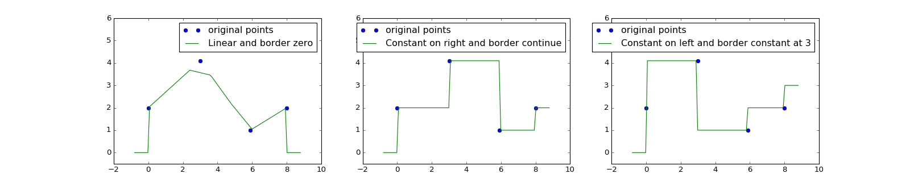

Time functions¶
This example illustrates the use of mlpp.base.TimeFunction.
Contents
Basics¶
Here is an example using a time function which takes values of array Y at times of array T
T = np.array([0, 1, 2, 5], dtype=float)
Y = np.array([2, 4.1, 1, 2], dtype=float)
linear_timefunction = TimeFunction([T, Y])
By default the time function will give a linear interpolation from the two nearest points for any time value, and it equals 0 outside of its bounds
>>> linear_timefunction.value(2)
1.00000...
>>> linear_timefunction.value(3)
1.33333...
>>> linear_timefunction.value(-1)
0.0
>>> linear_timefunction.value(7)
0.0
Plotting¶
Now we plot several time functions
- linear interpolation and big dt, where dt is the step between two points kept for our interpolation
- constant on right interpolation and continuous border
- constant on left interpolation and border fixed to a given value
This code will produce graphs of the above described functions
import numpy as np
from pylab import rcParams
import matplotlib.pyplot as plt
from mlpp.base.utils import TimeFunction
rcParams['figure.figsize'] = 20, 4
T = np.array([0, 3, 5.9, 8.001], dtype=float)
Y = np.array([2, 4.1, 1, 2], dtype=float)
tf_1 = TimeFunction([T, Y], dt=1.2)
tf_2 = TimeFunction([T, Y], border_type=TimeFunction.BorderContinue,
inter_mode=TimeFunction.InterConstRight, dt=0.01)
tf_3 = TimeFunction([T, Y], border_type=TimeFunction.BorderConstant,
inter_mode=TimeFunction.InterConstLeft, border_value=3)
ax1 = plt.subplot(131)
tf_1.plot(ax=ax1)
ax1.set_ylim([-0.5, 6.0])
ax2 = plt.subplot(132)
tf_2.plot(ax=ax2)
ax2.set_ylim([-0.5, 6.0])
ax3 = plt.subplot(133)
tf_3.plot(ax=ax3)
ax3.set_ylim([-0.5, 6.0])
plt.show()
(Source code, png, hires.png, pdf)
{kind=link}
{kind=link}

Warning
If the value for dt is not well chosen, then you could receive incorrect values for any interpolation in between steps.
This behavior is illustrated in the first graph under the second point